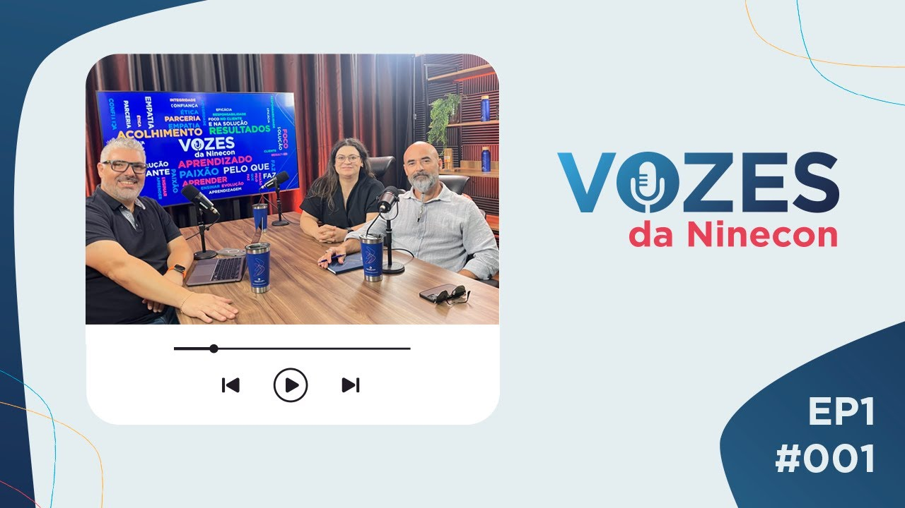
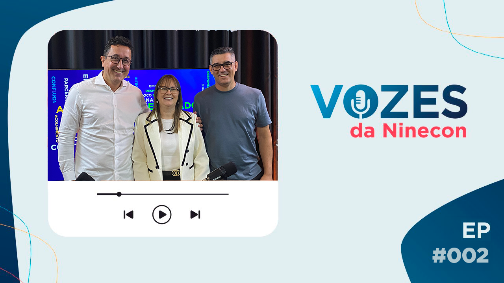
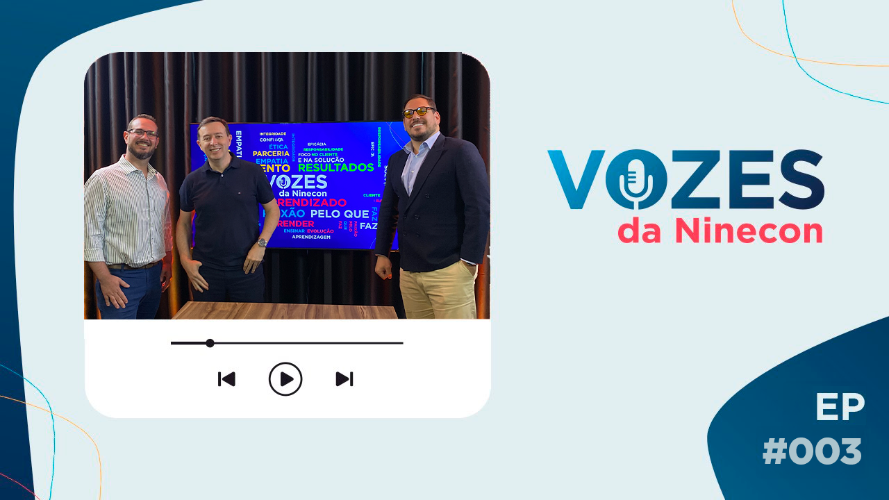
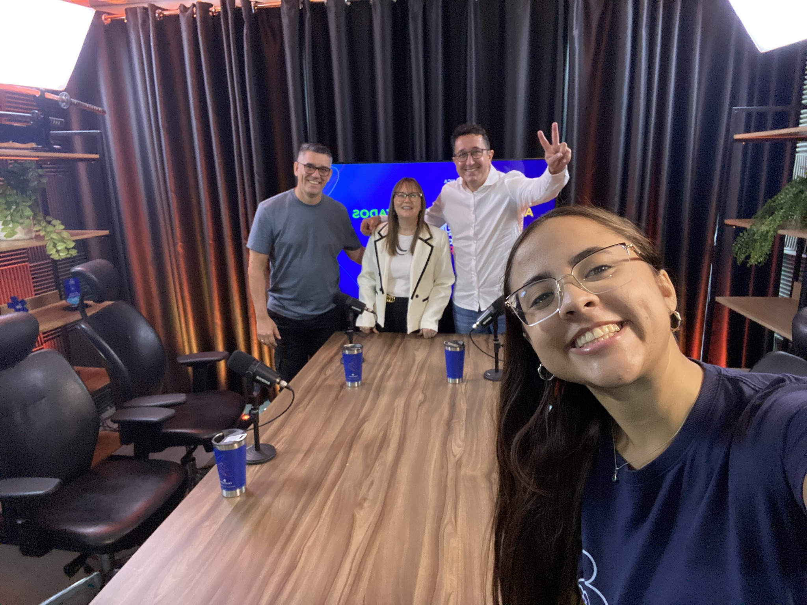
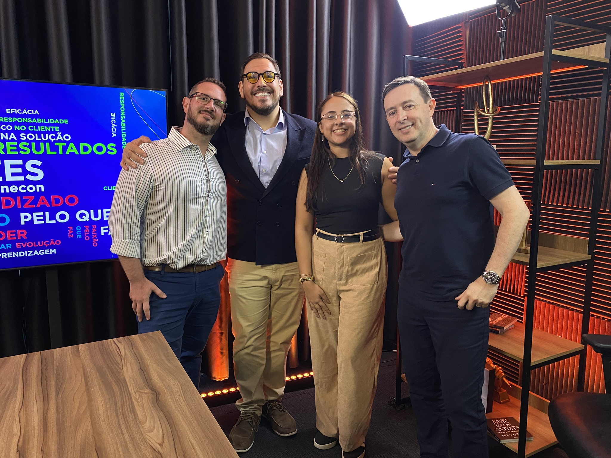

✦ portfólio de marketing & comunicação
Mari
Acesse meu LinkedIn →Veja alguns dos meus projetos ↓
sobre mim
Comecei minha carreira em experiências administrativas e de atendimento, foi ali que entendi que comunicação é, antes de tudo, sobre as pessoas do outro lado. Isso me trouxe pro marketing, e nunca saiu de mim.
Hoje trabalho com eventos, comunicação interna e employer branding. O que me move é fazer as pessoas sentirem que existe alguém real por trás. Seja num evento, num podcast ou numa campanha interna, a pergunta é sempre a mesma: quem vai receber isso e o que quero que ela sinta?
Já liderei encontros presenciais para times remotos, realizei produções de podcasts, reposicionei marcas e construí a autoridade digital de executivos. Em todos esses contextos, tirei a comunicação do automático e devolvi personalidade pra ela.

Oie, sou a Mari :)
Eventos corporativos
Concepção, execução e experiência do participanteComunicação Interna
Endomarketing, campanhas e cultura organizacionalEmployer Branding
Podcast, conteúdo e marca empregadoraThought Leadership
Posicionamento digital de executivoshabilidades
Eventos
- Concepção e planejamento estratégico
- Curadoria de dinâmicas e experiência
- Gestão de fornecedores e orçamento
- Identidade visual de eventos
- Execução e gestão de crise
Comunicação
- Estratégia de comunicação interna
- Endomarketing e campanhas de cultura
- Tom de voz e narrativa de marca
- Employer branding e podcast
- Thought leadership executivo
Ferramentas
- Adobe Illustrator & Photoshop
- Canva Pro & Figma
- Mlabs & Reportei
- Asana
- Claude Code
Design
- Layout & composição
- Identidade visual e KV
- Materiais de evento
- Social media design
- Apresentações e campanhas
meus projetos
Encontro de Líderes — Ninecon
Objetivo Criar um encontro presencial que fosse além do alinhamento estratégico — gerando conexão real entre as lideranças de um time que trabalha 100% remoto.
O que fiz Liderei tudo: a concepção do conceito, a curadoria das dinâmicas, o ritmo do dia, a identidade visual completa (KV, apresentações, convite, credencial e brindes), orçamentos, cronogramas, visitas técnicas, gestão de fornecedores e controle financeiro. O briefing começou sempre no mesmo lugar: quem são essas pessoas, o que elas precisam sentir ao sair e o que vai fazer esse dia valer a viagem.
Resultado O formato mudou de um dia inteiro de apresentações para um encontro onde as pessoas realmente participaram. Na última edição, 47 avaliações espontâneas com nota média 9,8 — dinâmica, conexão e leveza foram as palavras mais repetidas. Hoje as lideranças criam expectativa pelo próximo encontro. Num evento corporativo, isso diz mais do que qualquer métrica.
Cada edição tem um compilado completo em formato editorial — com fotos, dinâmicas e os momentos do dia. É a forma mais rápida de entender como o evento foi na prática.
Endomarketing — Ninecon
Objetivo Criar campanhas internas que as pessoas realmente quisessem abrir — com personalidade, contexto e intenção, não só informação.
O que fiz Planejei e executei campanhas internas temáticas — datas comemorativas, programas de cultura, iniciativas de desenvolvimento. Cada peça com contexto e intenção próprios, sem tratar tudo com o mesmo template. Criei o KV institucional que se tornou a identidade visual de toda a empresa: emails, apresentações e depois o site institucional.


Vozes da Ninecon — Podcast
Objetivo Criar um espaço de diálogo real entre as áreas da Ninecon — onde colaboradores pudessem falar sobre seus projetos, aprendizados e perspectivas. Com alcance externo via YouTube, o podcast também funciona como ferramenta de marca empregadora: mostra quem a Ninecon é por dentro.
O que fiz Estruturei a produção do podcast, desenvolvendo pautas, dirigindo as gravações, realizando a edição, a divulgação nas redes sociais e a publicação no blog e no YouTube. O formato promove conversas abertas entre um diretor e representantes de diferentes áreas, aproximando colaboradores e fortalecendo a comunicação interna.





Redes Sociais — Ninecon
Objetivo Reposicionar as redes sociais da Ninecon — criando uma comunicação mais humana, estratégica e consistente, capaz de fortalecer a marca e aproximar a empresa das pessoas.
O que fiz Assumi as redes em outubro de 2024 e iniciei o processo de transição visual em março de 2025. Mudei o tom de voz, humanizei o conteúdo, aumentei a frequência de publicações e criei uma nova identidade visual para o feed. Ao longo de 2025, foram 213 posts no feed, 35 Reels e 420 Stories — com consistência e intenção em cada peça. Cuidei do planejamento, criação, monitoramento e análise de desempenho no Instagram, LinkedIn e YouTube.
Evolução do feed


Ninecon — Thought Leadership
Objetivo Construir autoridade digital de diretores e líderes comerciais em agro, tech e varejo — gerando reconhecimento de marca por outros caminhos e fortalecendo o posicionamento da Ninecon nos segmentos que mais importam para o negócio.
O que fiz Liderei a estratégia e criação de conteúdo para 4 perfis executivos no LinkedIn e Instagram, trabalhando com agência parceira sob minha direção. Cuidei dos calendários editoriais, adaptação de linguagem para cada perfil e nicho, produção de vídeos e acompanhamento de performance mensal. Cada perfil tem identidade e linha editorial próprias — nada de template replicado.
Impacto para o negócio Conteúdos de autoridade sobre temas estratégicos — como reforma tributária — são usados pelo time comercial como ferramenta de relacionamento com clientes. Um dos executivos foi convidado para participar do Google Cloud Next 2026 em Las Vegas e para um almoço com o IT Forum: reconhecimento direto de mercado gerado pelo posicionamento digital construído ao longo do projeto.
Evolução por executivo — taxa de engajamento Out–Dez/25 → Jan–Mar/26: Cris 3,52% → 7,01% · Lucas 4,16% → 7,07% · André 3,60% → 5,37% · Bruno 4,09% → 6,11%


{kind=link}
{kind=link}
{kind=link}
{kind=link}
{kind=link}
Foton — Nova Tunland
O que fiz Lançamento nacional com presença em mais de 30 concessionárias. Fui responsável pelo desdobramento visual das peças — do backdrop ao outdoor — garantindo que a marca lesse forte em qualquer formato. Tons escuros, estética densa, apelo aspiracional.


vamos conversar?